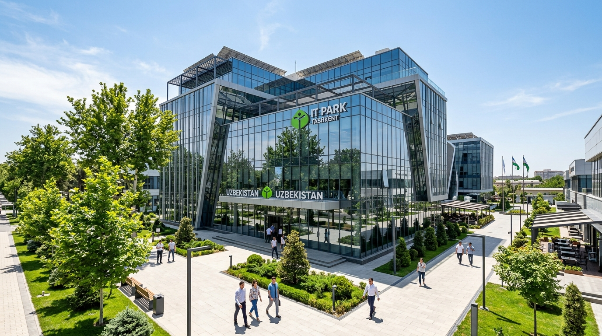
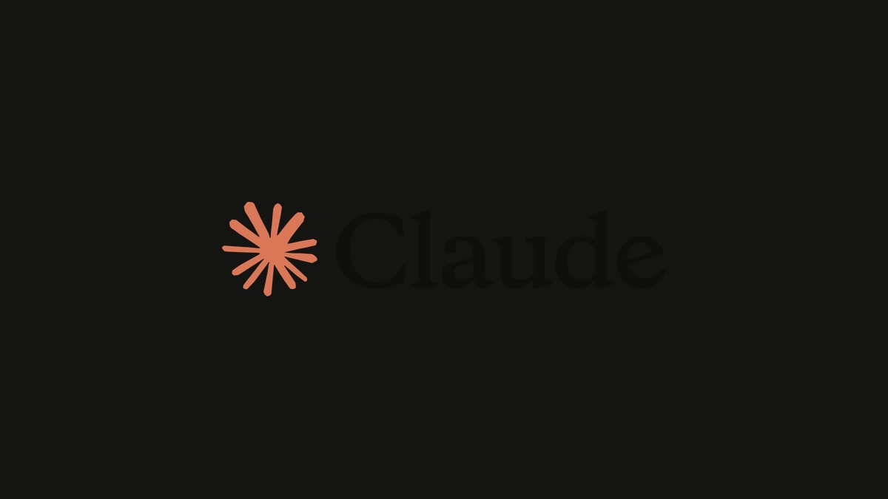
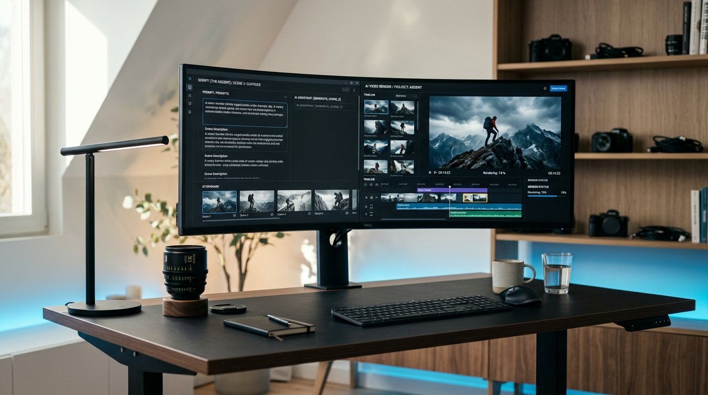

O‘zbekiston data-markazlarida sun’iy intellekt hisoblash quvvatlariga talab 90% dan oshdi
Davlat va xususiy sektor loyihalarini tezlashtirish uchun NVIDIA texnologiyalariga asoslangan milliy superkompyuter klasterlari kengaytirilmoqda.
Quruq shov-shuvsiz. Global sun’iy intellekt innovatsiyalari, O‘zbekiston sun’iy intellekt ekotizimi, xolis vositalar tahlili va biznesda qo‘llash mumkin bo‘lgan amaliy bilimlar.
Fransiyaning Mistral AI kompaniyasi 1.05 trillion parametrli va 1 million token kontekstga ega suveren flagman model og'irliklarini ommaga taqdim etdi.
Davlat va xususiy sektor loyihalarini tezlashtirish uchun NVIDIA texnologiyalariga asoslangan milliy superkompyuter klasterlari kengaytirilmoqda.
Oksford universiteti tadqiqotiga ko'ra dunyo aholisining yarmidan ko'pi muntazam generativ vositalardan foydalanmoqda, biroq sun’iy intellekt yangiliklariga ishonch past.

Vazirlar Mahkamasining 581-son qarori bilan ilmiy tashkilotlar, startaplar va OTMlarning ijtimoiy loyihalari uchun oyiga 10 million bepul token hamda 120 GB video xotira ajratish tartibi tasdiqlandi.

Claude modellari ishlab chiquvchisi bo‘lgan Anthropic kompaniyasi Nasdaq birjasida 'ANT' tickeri ostida ommaviy savdolarga chiqish uchun AQSh Qimmatli qog‘ozlar komissiyasiga (SEC) S-1 ro‘yxatdan o‘tish arizasini taqdim etdi.
OpenAI Dots, Meta Muse va GPT-6.1 Sol misolida: chatbot javob beradi, agent esa maqsadni mustaqil bajaradi. 7 ta ko‘rgazmali slayd va amaliy qoidalar.
O‘zingizning sohangiz, vazifangiz va kontekstingizni tanlab, 1 daqiqada mukammal tizimli prompt quring va to‘g‘ridan-to‘g‘ri ChatGPT/Claude'da sinab ko‘ring.
ChatGPT, Claude va Gemini o‘rtasidagi farq, bepul vs pullik tariflar, shaxsiy kabinet ochish va birinchi kundan boshlab to‘g‘ri foydalanish qoidalari.

RCFO formulasi (Rol, Kontekst, Format, Cheklovlar), few-shot prompting, qadam-baqadam tafakkur va sun’iy intellektdan aniq biznes natija olish sirlari.
Didox shartnoma auditi, Excel va 1C ma’lumotlarini tahlil qilish, yig‘ilish bayonnomalari va Gamma taqdimotlarni avtomatlashtirish.
Make, n8n, OpenAI API va Telegram botlar yordamida 24/7 ishlovchi avtonom savdo va mijozlarni qabul qilish tizimini 0 dan loyihalash.
Apollo, Lemlist va sun’iy intellekt orqali eksport va mahalliy korporativ mijozlar bazasini qurish, sovuq xatlar va savdo voronkasi.

Xodimlar mijozlar bazasi yoki ichki moliyaviy hisobotlarni ommaviy AI xizmatlariga kiritganda ma’lumotlar sizib chiqmasligi uchun amaliy choralar.

Oddiy qadamma-qadam yo‘riqnoma: ChatGPT yoki Gemini'da 3 ta kadr ssenariysini olish, Google Flow'da 9:16 video chiqarish va CapCut'da musiqa bilan professional Reels tayyorlash.